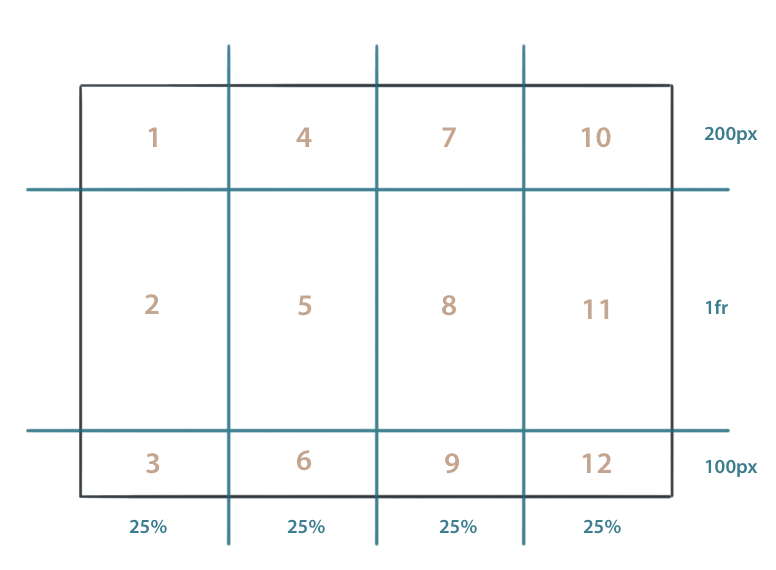

Layout mit Grid¶
https://blog.kulturbanause.de/2013/12/css-grid-layout-module/
https://tympanus.net/codrops/css_reference/grid/
http://maddesigns.de/css-grids/#/4
https://hackernoon.com/how-css-grid-beats-bootstrap-85d5881cf163
https://codeburst.io/css-grid-vs-flexbox-building-simple-layouts-43e569a66f0a
Komplexe Weblayouts lassen sich weder mit float-basierten Gestaltungsrastern noch mit Flexbox perfekt umsetzen. Die Floating-Technik wurde nicht zur Konstruktion komplexer Layouts entwickelt, was wir u.a. daran merken, dass wir Elemente nicht nach oben und unten verschieben können. Flexbox ermöglicht es zwar die Gestaltung vollständig vom HTML-Code zu trennen, bietet sich aber eher für lineare Strukturen an als für verschachtelte. CSS Grid ermöglicht »echte« Gestaltungsraster auf Basis von CSS. In diesem Beitrag beschreiben wir, wie Layouts mit Hilfe von CSS Grids konstruiert werden können.
Grundlegende Funktionsweise von CSS Grid¶
CSS Grids arbeiten mit einem Elternelement, in dem das Raster definiert wird und mit darin enthaltenen Kind-Elementen, die im Raster positioniert werden. Dem Elternelement wird mit Hilfe der Angabe display:grid; mitgeteilt, dass CSS Grids genutzt werden sollen. Mit Hilfe der Eigenschaften grid-template-columns und grid-template-rows werden Rasterlinien gezeichnet.
Das folgende Beispiel erzeugt ein CSS Grid mit drei Zeilen und vier Spalten. Die erste Zeile ist 200 Pixel hoch, die letzte 100 Pixel. Die mittlere Zeile hat die Angabe 1fr (1 Fraction) erhalten. Damit erstreckt Sie sich über den noch freien Platz. Wie viel Platz zur Verfügung steht wird durch die Gesamthöhe des .container bestimmt. Beachtet, dass die Angabe 1fr auch 0 Pixel bedeuten kann, wenn der Container eine zu niedrige bzw. keine Höhe erhalten hat.
Die vier Spalten sind jeweils 25% breit.
Wenn innerhalb des Elternelements nun Kind-Elemente liegen, fügen sich die Inhalte automatisch von oben links oben nach rechts unten in die Rasterzellen ein. Standardmäßig ordnen sich die Elemente zeilenbasiert an
.container {
display: grid;
grid-template-rows: 200px 1fr 100px;
grid-template-columns: 25% 25% 25% 25%;
grid-auto-flow: column;
}
Mit der CSS-Eigenschaft grid-auto-flow kann beeinflusst werden, nach welcher Regel die Kind-Elemente im Raster einsortiert werden. Der Wert column führt beispielsweise zu folgender Anordnung:
Elemente im Raster positionieren¶
Mit CSS Grids ist es möglich, Elemente völlig frei im Raster zu positionieren. Dazu wird den Kind-Elementen mit Hilfe der CSS-Eigenschaften
grid-row-start und grid-row-end bzw. grid-column-start und grid-column-end mitgeteilt, wo sie sich im Raster befinden sollen. Bitte beachtet, dass die Positionierung nicht über Rasterspalten, sondern über Rasterlinien erfolgt. Das zuletzt gezeigte Layout besitzt beispielsweise vier Spalten und somit fünf Rasterlinien (bei 0%, 25%, 50%, 75% und 100%). Wenn nun ein Element über die volle Breite des Layouts gestreckt werden soll, dann streckt es sich von Rasterlinie 1 (bei 0%) bis 5 (bei 100%).
Das folgende Code-Beispiel verdeutlicht die Positionierung von Elementen im Raster.
Kurzschreibweise
- Es existieren auch die Kurzschreibweisen
grid-columnbzw.grid-row. Hierbei werden Start- und End-Rasterlinie mit Slash voneinander getrennt.Beispiel:
header { grid-column:1 / 5; grid-row:1 / 2; }
Benannte Rasterlinien¶
Die einzelnen Rasterlinien können auch benannt werden. Dazu wird bei der Definition des Rasters mittels grid-template-rows bzw. grid-template-columns der gewünschte Name in eckigen Klammern zwischen die Breitenangaben der Spalten geschrieben. Es ist auch mehr als eine Bezeichnung pro Position erlaubt.
.container {
height:100vh;
display: grid;
grid-template-rows: [line-h-1] 200px [line-h-2] 1fr [line-h-3] 100px [line-h-4];
grid-template-columns: [line-v-1] 25% [line-v-2] 25% [line-v-3] 25% [line-v-4] 25% [line-v-5];
}
Bei der Zuweisung der Kind-Elemente wird dann anstelle der Nummer der Spalte bzw. Zeile der jeweilige Name angegeben.
header {
grid-column: line-v-1 / line-v-5;
grid-row: line-h-1 / line-h-2;
}
Benannte Raster-Bereiche (Rasterzellen)¶
Die einzelnen Bereiche des CSS-Grids können mit Hilfe des Befehls grid-template-areas bei der Definition des Rasters im Elternelement benannt werden. Dazu werden die einzelnen Zellen innerhalb einer Zeile mit Namen versehen. Die einzelnen Namen werden mit Leerzeichen von einander getrennt. Einzelne Zeilen stehen in Anführungsstrichen. Durch eine sinnvollste Strukturierung im Code, kann so der Layoutaufbau im Stylesheets »sichtbar« gemacht werden.
.container {
height:100vh;
display: grid;
grid-template-rows: 200px 1fr 100px;
grid-template-columns: 25% 25% 25% 25%;
grid-template-areas:
"header header header header"
"content content content sidebar"
"footer footer footer footer"
;
}
Um Kind-Elemente einem benannten Bereich im Raster zuzuweisen, wird der Befehl grid-area verwendet.
header {
grid-area: header;
}
article {
grid-area: content;
}
aside {
grid-area: sidebar;
}
footer {
grid-area: footer;
}
Leere und undefinierte Bereiche im Raster kennzeichnen
Wenn Bereiche im Raster leer bleiben sollen, dann wird dafür ein Punkt als Platzhalter verwendet. Wenn der Bereich nicht definiert werden soll, kommt das Schlüsselwort none zum Einsatz.
<style>
body {
margin:0;
}
.container {
height:100vh;
display: grid;
grid-template-rows: 200px 1fr 100px;
grid-template-columns: 25% 25% 25% 25%;
grid-template-areas:
"header header header header"
"content content . sidebar"
"footer footer footer footer"
;
}
header {
background:tomato;
grid-area: header;
}
article {
background:gold;
grid-area: content;
}
aside {
background:lightgreen;
grid-area: sidebar;
}
footer {
background:lightblue;
grid-area: footer;
}
</style>
Abstände zwischen Rasterzellen¶
Wenn Abstände zwischen den Spalten bzw. Zeilen des Rasters entstehen sollen, kann mit Hilfe der Befehle grid-column-gap bzw. grid-row-gap im Elternelement eine Breite für die Rasterlinien festgelegt werden. Bitte beachtet, dass die Abstände nur zwischen Spalten erzeugt werden. Die erste und letzte Rasterlinie bleibt also unverändert.
.container {
grid-row-gap: 20px;
grid-column-gap: 10px;
/* weitere eigenschaften */
}
/*Die Kurzschreibweise grid-gap existiert ebenfalls:*/
.container {
grid-gap: 20px 10px;
/* weitere eigenschaften */
}
Ausrichting innerhalb des Rasters¶
In den bisherigen Beispielen strecken sich die Kind-Elemente immer über die volle Fläche einer Rasterzelle, obwohl eigtl. weniger Inhalt enthalten ist. Sowohl für das Elternelement als auch für die einzelnen Kind-Elemente kann dieses Verhalten verändert werden.
Globale Ausrichtung im Eltern-Element festlegen
Die Befehle für das Eltern-Element lauten justify-items für das horizontale Verhalten, und align-items für das vertikale Verhalten. Es stehen jeweils die Werte start, end, center und stretch zur Wahl. stretch ist der Standardwert und selbstverständlich können justify-items und align-items kombiniert werden.
Individuelle Ausrichtung im Kind-Element festlegen
Wenn lediglich die Ausrichtung einer einzelnen Rasterzelle verändert werden soll, stehen dafür die Befehle align-self und justify-self zur Verfügung. Auch für diese Eigenschaften existieren die Werte start, end, center und stretch.
article {
align-self: start;
}
Responsive CSS Grids¶
Wenn es um die Anpassung des Layouts für verschiedene Displaygrößen geht, bieten sich CSS Grids ebenfalls sehr gut an. Mit Hilfe von Media Queries kann das Raster neu definiert und die Kind-Elemente neu zugewiesen werden.
.container {
height:100vh;
display: grid;
grid-template-rows: 80px 4fr 1fr 40px;
grid-template-columns: 100%;
grid-template-areas:
"header"
"content"
"sidebar"
"footer"
;
}
@media screen and (min-width: 44.001em) {
.container {
grid-template-rows: 200px 1fr 100px;
grid-template-columns: 25% 25% 25% 25%;
grid-template-areas:
"header header header header"
"content content content sidebar"
"footer footer footer footer"
;
}
}
Die repeat()-Funktion¶
Wenn innerhalb des Grids Bereiche wiederholt werden sollen, so kann dafür die repeat()-Funktion genutzt werden. Der 1. Wert in repeat() steht für die Anzahl der Wiederholungen. Anschließend folgenden die gewünschten Grid-Eigenschaften.
Der folgende Code wiederholt das Grid für Zeilen zwei Mal, und das für Spalten drei Mal.
.container {
display:grid;
grid-template-rows: repeat(2, 100px 50px);
grid-template-columns: repeat(3, 200px 1fr 200px);
}
Anstelle der repeat()-Funktion könnte auch manuell folgender Code geschrieben werden.
.container {
display:grid;
grid-template-rows: 100px 50px 100px 50px;
grid-template-columns: 200px 1fr 200px 200px 1fr 200px 200px 1fr 200px;
}
Die minmax()-Funktion¶
Mit Hilfe der CSS minmax()-Funktion können Rasterzellen mit einer Mindest- und Maximalbreite versehen werden. Wie der Name der Funktion bereits andeutet, wird innerhalb der runden Klammern zuerst der Wert für die Mindestbreite des Elementes vergeben, anschließend mit Komma getrennt die Maximalausdehnung.
Erwähnenswert sind zwei Schlüsselwörter im Zusammenhang mit der minmax()-Funktion.
min-content steht für die Mindestbreite des Inhalts der Rasterzelle
max-content steht für die Maximalausdehnung des Inhalts der Rasterzelle
Der folgende Code erzeugt ein CSS Grid mit einer Zeile und zwei Spalten. Die erste Spalte ist mindestens so breit wie die geringste Breite des Inhalts und maximal 300 Pixel breit. Die zweite Spalte ist mindestens so breit wie die maximale Ausdehnung des Inhalts und maximal 1fr breit.
.container {
display: grid;
grid-template-columns: minmax(min-content, 300px) minmax(max-content, 1fr);
}
Tools¶
Es existieren einige Online-Tools, die das Erlernen von CSS Grids, sowie den Umgang damit erleichtern. Wir haben unter folgendem Link einige Tools zusammengestellt: CSS Grid Tools Browsersupport
Den Browsersupport für CSS Grids entnehmt ihr bitte der Website caniuse.com. Ein Polyfill zur Implementierung in inkompatiblen Browsern findet ihr hier.